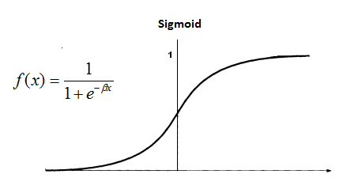

Neural Network I Overview
This is a note for learning Neural Network in Machine Learning based on this course on Coursera.
Simple Models of Neurons
Let y to be output, $\vec{x}$ to be input.
- Linear Neurons
$$y=b+\sum_{i}x_{i}w_{i}$$ - Binary Threshold Neurons
$$z=b+\sum_{i}x_{i}w_{i} ,$$
$$y=\begin{cases} 1,&if z\geq 0 \\ 0,&otherwise \end{cases}$$ - Rectified Linear Neurons
$$y=\begin{cases} z,&if z>0 \\ 0,&otherwise \end{cases}$$ - Sigmoid Neurons
$$y=\frac{1}{1+e^{-\beta z}}$$
- Stochastic Binary Neurons
Treat the output of the sigmoid function as the probability of producing a spike in a short time window.$p(s=1)=\frac{1}{1+e^{-\beta z}}$
Three Types of Learning
1. Supervised learning
Learn to predict an output when given an input vector.
- Regression: The target output is a real number or a whole vector of
real numbers.- The price of a stock in 6 months time.
- The temperature at noon tomorrow.
- Classification: The target output is a class label.
- The simplest case is a choice between 1 and 0.
- We can also have multiple alternative labels.
2. Reinforcement learning
The output is an action or sequence of actions, and our goal is to maximize the expected sum of the future rewards.It is difficult because the rewards are typically delayed so it is hard to know where we went wrong(or right).
This topic will not be covered in this course.
3. Unsupervised learning
Discover a good internal representation of the input. It is hard to say what the aim of unsupervised learning is. The only one well-known branch is Clustering, though there remains lots of significant but unknown area in this topic.